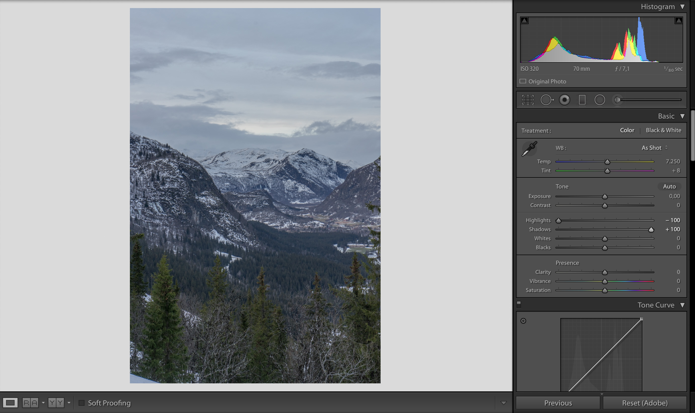
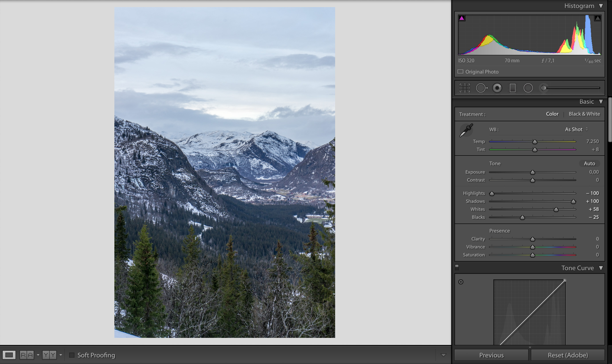
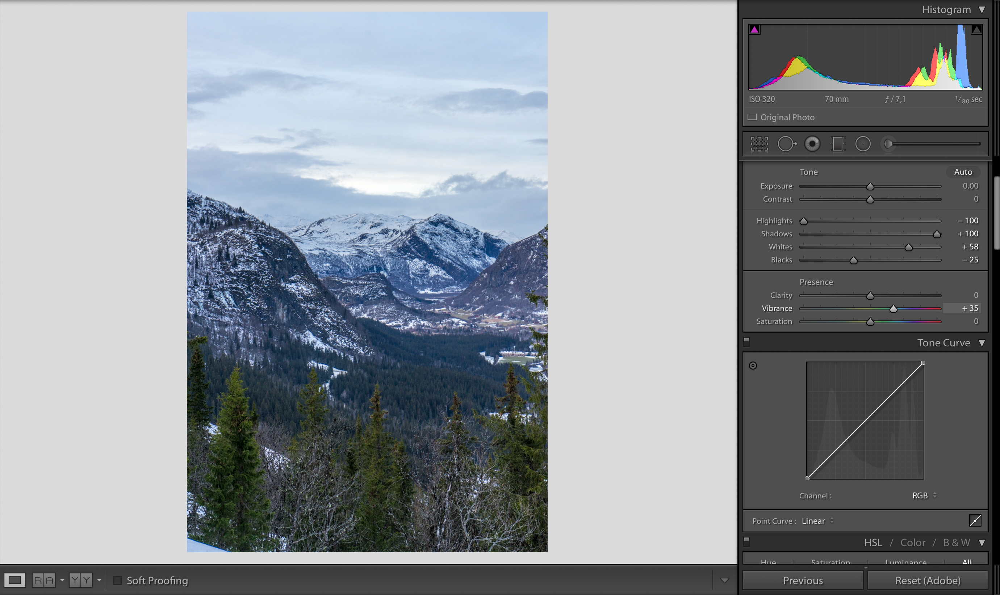
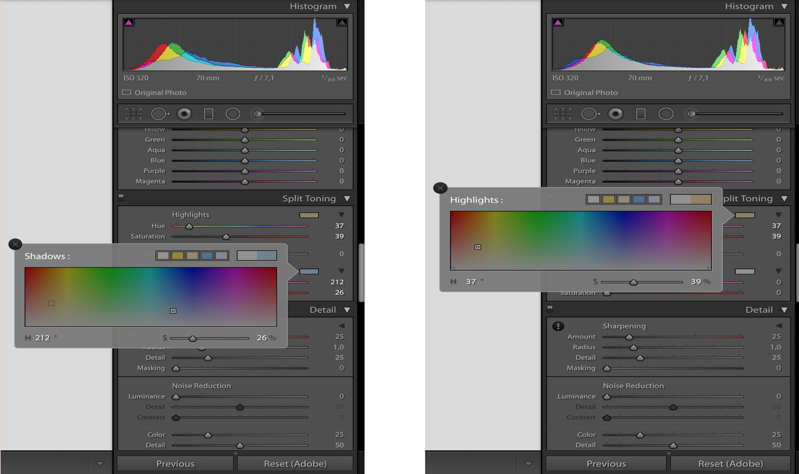
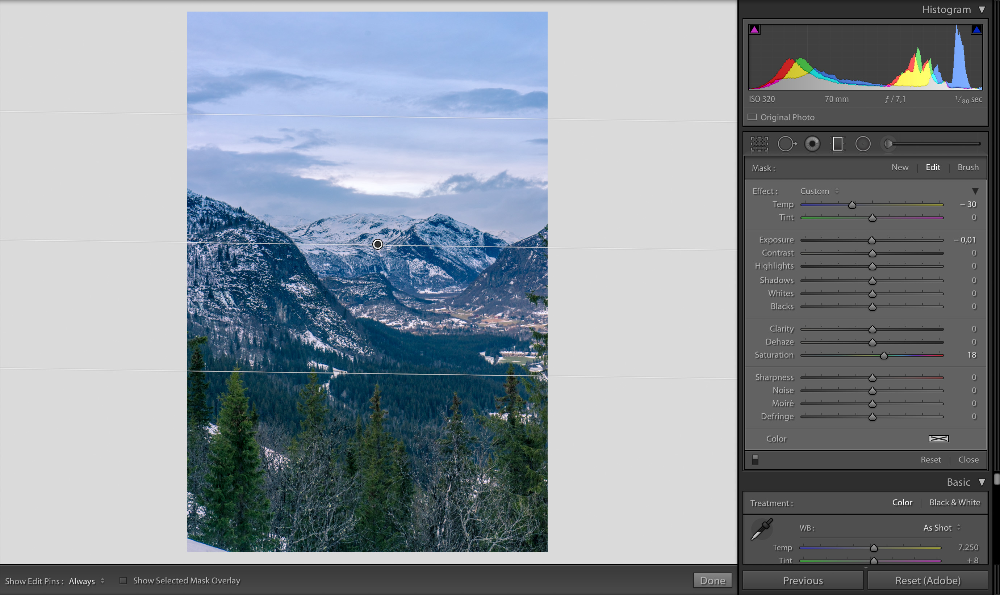
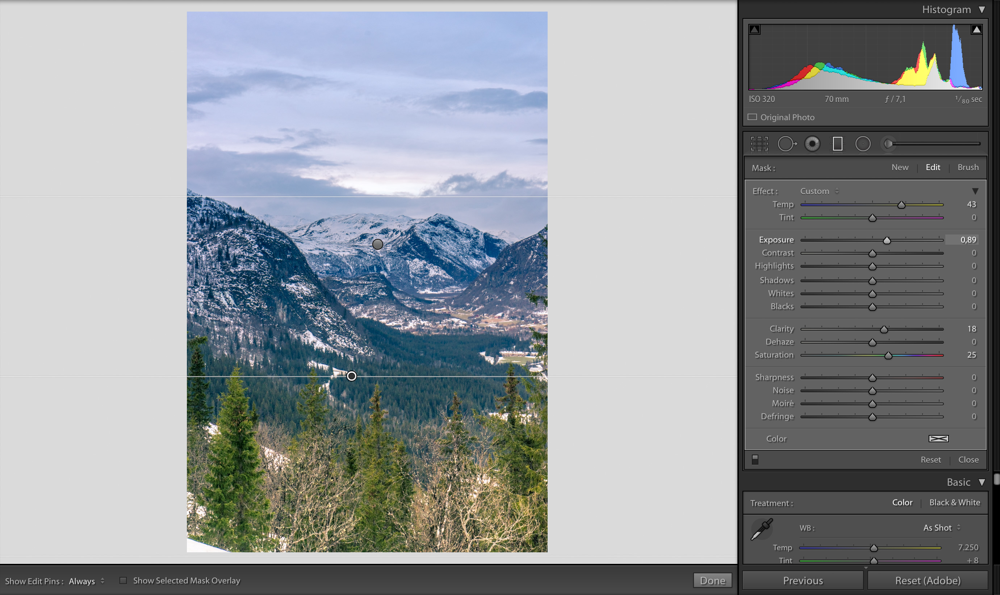

Tag dine billeder til det næste step med Lightroom
Synes du det er vildt fedt at være skyde billeder, men føler nogle gange at der mangler et eller andet, eller at du bare gerne vil forbedre dine billeder en lille smule? Så kunne det her være noget for dig.
Kort kommer det til at handle om, hvordan du kan udnytte Lightroom til at give dine billeder et lille pift og et bar billedeteknikker du kan prøve for at skabe noget anderledes.
Hvad er Lightroom?
Lightroom som er det program jeg vil fokusere på, er lavet af Adobe og følger med i flere Adobe CC medlemsskab. Det kan basic det samme som man kan i Photoshop's Camera RAW modul, som man finder under filtre.
I Lightroom har du primært en masse sliders, som kan kontrollere farver og lys på forskellige måder, så du kan opnå næsten lige det look du synes. Om du så vil have en dyster og mørk dag til at se varm og farverig ud eller bare lave små justeringer.
Quick guide! - forbeder dine billeder i 6 steps
Her kommer der en hurtig gennemgang af, hvordan du til en start kan tage dine billeder det første skridt videre. i guiden tager jeg udgangspunkt i nedenstående billede.

1. Highlights and Shadows
Det første vi gør er at tage ”Highlights” og sætte til -100 for at få flest mulige detaljer frem i skyerne, og dernæst tage ”Shadows” og sætte til +100 for at få flest mulige detaljer frem i skyggeområderne.
2. Whites and Blacks
Så holder jeg shift knappen nede og double klikker på ”Whites” og ”Blacks”. Det gør at de sliders automatisk bliver sat til lige der hvor de første white points og black points er i billedet, altså punkter som er 100% hvide og sorte.
Grunden til vi gør det er for at skabe en lille smule kontrast i billedet.
3. Vibrance
Nu tager vi ”Vibrance” og skruer lidt op for, så vi får lidt stærkere farver i billedet. Jeg sætter den på +35, men føler du får noget andet sætter du den bare hvor du synes.
4. Split Toning
Her ruller vi et stykke ned i menuen og finder den fane som hedder splittoning. ”Hightlights” sætter jeg som regel i det varme gul/røde område, og Shadows det blålige område.
Men pas på med at give den for meget gas på farverne, det kan hurtig komme til at se unaturligt ud.
5. Graduated Filter top
Så finder vi Graduated Filter, som ligger i top menuen. Her trækker vi et ned fra toppe, hold shift nede så er du sikker på du laver den helt lige.
Så tager jeg og sætter white balance(Temp) til noget koldere, og sætter yderlige en smule ”Vibrance” på
6. Graduated Filter bund
Og igen tager jeg et Graduated Filter og trækker op fra bunden
.Her sætter jeg derimod white balance til noget varmere, skruer lidt op for ”Exposure” og en smule op for ”Clarity” og ”Vibrance”
Nu har vi fået en hel del mere liv i billedet, og fået en hel del mere depth i billedet ved at gøre forskel på farve temperaturen i forgrunden og baggrunden af billedet.
Wrap-Up
Nu er du kommet et godt skridt frem af, og disse få step kan du bruge som guidelines på næsten alle billeder i større eller mindre grad. Hvis du gerne vil leje lidt mere, kan du evt. prøve leje lidt med brush tool og lave nogle mere lokale justeringer, eller prøve at leje med HSL sliderne til at ændre lidt på farverne.
Så nu er der kun en ting at gøre, og det er at komme i gang med at lege løs og prøve dig frem. Men pas på med ikke at overgøre, fordi billederne meget hurtig kan komme til at se unaturlige ud.
Øvelse gør mester!